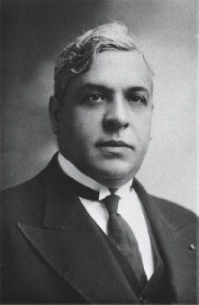
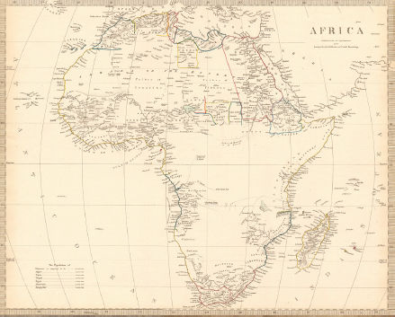

Animals such as wolves and chimpanzees live in a dual reality. On the one hand, they are familiar with objective entities outside them, such as trees, rocks and rivers. On the other hand, they are aware of subjective experiences within them, such as fear, joy and desire. Sapiens, in contrast, live in triple-layered reality. In addition to trees, rivers, fears and desires, the Sapiens world also contains stories about money, gods, nations and corporations. As history unfolded, the impact of gods, nations and corporations grew at the expense of rivers, fears and desires. There are still many rivers in the world, and people are still motivated by their fears and wishes, but Jesus Christ, the French Republic and Apple Inc. have dammed and harnessed the rivers, and have learned to shape our deepest anxieties and yearnings.
Since new twenty-first-century technologies are likely to make such fictions only more potent, understanding our future requires understanding how stories about Christ, France and Apple have gained so much power. Humans think they make history, but history actually revolves around the web of stories. The basic abilities of individual humans have not changed much since the Stone Age. But the web of stories has grown from strength to strength, thereby pushing history from the Stone Age to the Silicon Age.
It all began about 70,000 years ago, when the Cognitive Revolution enabled Sapiens to start talking about things that existed only in their own imagination. For the following 60,000 years Sapiens wove many fictional webs, but these remained small and local. The spirit of a revered ancestor worshipped by one tribe was completely unknown to its neighbours, and seashells valuable in one locality became worthless once you crossed the nearby mountain range. Stories about ancestral spirits and precious seashells still gave Sapiens a huge advantage, because they allowed hundreds and sometimes even thousands of Sapiens to cooperate effectively, which was far more than Neanderthals or chimpanzees could do. Yet as long as Sapiens remained hunter-gatherers, they could not cooperate on a truly massive scale, because it was impossible to feed a city or a kingdom by hunting and gathering. Consequently the spirits, fairies and demons of the Stone Age were relatively weak entities.
The Agricultural Revolution, which began about 12,000 years ago, provided the necessary material base for enlarging and strengthening the intersubjective networks. Farming made it possible to feed thousands of people in crowded cities and thousands of soldiers in disciplined armies. However, the intersubjective webs then encountered a new obstacle. In order to preserve the collective myths and organise mass cooperation, the early farmers relied on the data-processing abilities of the human brain, which were strictly limited.
Farmers believed in stories about great gods. They built temples to their favourite god, held festivals in his honour, offered him sacrifices, and gave him lands, tithes and presents. In the first cities of ancient Sumer, about 6,000 years ago, the temples were not just centres of worship, but also the most important political and economic hubs. The Sumerian gods fulfilled a function analogous to modern brands and corporations. Today, corporations are fictional legal entities that own property, lend money, hire employees and initiate economic enterprises. In ancient Uruk, Lagash and Shurupak the gods functioned as legal entities that could own fields and slaves, give and receive loans, pay salaries and build dams and canals.
Since the gods never died, and since they had no children to fight over their inheritance, they gathered more and more property and power. An increasing number of Sumerians found themselves employed by the gods, taking loans from the gods, tilling the gods’ lands and owing taxes and tithes to the gods. Just as in present-day San Francisco John is employed by Google while Mary works for Microsoft, so in ancient Uruk one person was employed by the great god Enki while his neighbour worked for the goddess Inanna. The temples of Enki and Inanna dominated the Uruk skyline, and their divine logos branded buildings, products and clothes. For the Sumerians, Enki and Inanna were as real as Google and Microsoft are real for us. Compared to their predecessors – the ghosts and spirits of the Stone Age – the Sumerian gods were very powerful entities.
It goes without saying that the gods didn’t actually run their businesses, for the simple reason that they didn’t exist anywhere except in the human imagination. Day-to-day activities were managed by the temple priests (just as Google and Microsoft need to hire flesh-and-blood humans to manage their affairs). However, as the gods acquired more and more property and power, the priests could not cope. They may have represented the mighty sky god or the all-knowing earth goddess, but they themselves were fallible mortals. They had difficulty remembering all the lands belonging to the goddess Inanna, which of Inanna’s employees had received their salary already, which of the goddess’s tenants had failed to pay rent and what interest rate the goddess charged her debtors. This was one of the main reasons why in Sumer, like everywhere else around the world, human cooperation networks could not grow much even thousands of years after the Agricultural Revolution. There were no huge kingdoms, no extensive trade networks and no universal religions.
This obstacle was finally removed about 5,000 years ago, when the Sumerians invented both writing and money. These Siamese twins – born to the same parents at the same time and in the same place – broke the data-processing limitations of the human brain. Writing and money made it possible to start collecting taxes from hundreds of thousands of people, to organise complex bureaucracies and to establish vast kingdoms. In Sumer these kingdoms were managed in the name of the gods by human priest-kings. In the neighbouring Nile Valley people went a step further, merging the priest-king with the god to create a living deity – pharaoh.
The Egyptians considered pharaoh to be an actual god rather than just a divine deputy. The whole of Egypt belonged to that god, and all people had to obey his orders and pay his taxes. Just as in the Sumerian temples, so also in pharaonic Egypt the god didn’t manage his business empire by himself. Some pharaohs ruled with an iron fist, while others passed their days at banquets and festivities, but in both cases the practical work of administering Egypt was left to thousands of literate officials. Just like any other human, pharaoh had a biological body with biological needs, desires and emotions. But the biological pharaoh was of little importance. The real ruler of the Nile Valley was an imagined pharaoh that existed in the stories millions of Egyptians told one another.
While pharaoh sat in his palace in the capital city of Memphis, eating grapes and dallying with his wives and mistresses, pharaoh’s officials criss-crossed the kingdom from the Mediterranean shore to the Nubian Desert. The bureaucrats calculated the taxes each village had to pay, wrote them on long papyrus scrolls and sent them to Memphis. When a written order came from Memphis to recruit soldiers to the army or labourers for some construction project, the officials gathered the necessary men. They computed how many kilograms of wheat the royal granaries contained, how many work days were required to clean the canals and reservoirs, and how many ducks and pigs to send to Memphis so that pharaoh’s harem could dine well. Even when the living deity died, and his body was embalmed and borne in an extravagant funerary procession to the royal necropolis outside Memphis, the bureaucracy kept going. The officials kept writing scrolls, collecting taxes, sending orders and oiling the gears of the pharaonic machine.
If the Sumerian gods remind us of present-day company brands, so the living-god pharaoh can be compared to modern personal brands such as Elvis Presley, Madonna or Justin Bieber. Just like pharaoh, Elvis too had a biological body, complete with biological needs, desires and emotions. Elvis ate and drank and slept. Yet Elvis was much more than a biological body. Like pharaoh, Elvis was a story, a myth, a brand – and the brand was far more important than the biological body. During Elvis’s lifetime, the brand earned millions of dollars selling records, tickets, posters and rights, but only a small fraction of the necessary work was done by Elvis in person. Instead, most of it was done by a small army of agents, lawyers, producers and secretaries. Consequently when the biological Elvis died, for the brand it was business as usual. Even today fans still buy the King’s posters and albums, radio stations go on paying royalties, and more than half a million pilgrims flock each year to Graceland, the King’s necropolis in Memphis, Tennessee.
Brands are not a modern invention. Just like Elvis Presley, pharaoh too was a brand rather than a living organism. For millions of followers his image counted for far more than his fleshy reality, and they kept worshipping him long after he was dead.
Left: © Richard Nowitz/Getty Images. Right: © Archive Photos/Stringer/Getty Images.
Prior to the invention of writing, stories were confined by the limited capacity of human brains. You couldn’t invent overly complex stories which people couldn’t remember. With writing you could suddenly create extremely long and intricate stories, which were stored on tablets and papyri rather than in human heads. No ancient Egyptian remembered all of pharaoh’s lands, taxes and tithes; Elvis Presley never even read all the contracts signed in his name; no living soul is familiar with all the laws and regulations of the European Union; and no banker or CIA agent tracks down every dollar in the world. Yet all of these minutiae are written somewhere, and the assemblage of relevant documents defines the identity and power of pharaoh, Elvis, the EU and the dollar.
Writing has thus enabled humans to organise entire societies in an algorithmic fashion. We encountered the term ‘algorithm’ when we tried to understand what emotions are and how brains function, and defined it as a methodical set of steps that can be used to make calculations, resolve problems and reach decisions. In illiterate societies people make all calculations and decisions in their heads. In literate societies people are organised into networks, so that each person is only a small step in a huge algorithm, and it is the algorithm as a whole that makes the important decisions. This is the essence of bureaucracy.
Think about a modern hospital, for example. When you arrive the receptionist hands you a standard form, and asks you a predetermined set of questions. Your answers are forwarded to a nurse, who compares them with the hospital’s regulations in order to decide what preliminary tests to give you. She then measures, say, your blood pressure and heart rate, and takes a blood test. The doctor on duty examines the results, and follows a strict protocol to decide in which ward to hospitalise you. In the ward you are subjected to much more thorough examinations, such as an X-ray or an fMRI scan, mandated by thick medical guidebooks. Specialists then analyse the results according to well-known statistical databases, deciding what medicines to give you or what further tests to run.
This algorithmic structure ensures that it doesn’t really matter who is the receptionist, nurse or doctor on duty. Their personality type, their political opinions and their momentary moods are irrelevant. As long as they all follow the regulations and protocols, they have a good chance of curing you. According to the algorithmic ideal, your fate is in the hands of ‘the system’, and not in the hands of the flesh-and-blood mortals who happen to man this or that post.
What’s true of hospitals is also true of armies, prisons, schools, corporations – and ancient kingdoms. Of course ancient Egypt was far less technologically sophisticated than a modern hospital, but the algorithmic principle was the same. In ancient Egypt too, most decisions were made not by a single wise person, but by a network of officials linked together through papyri and stone inscriptions. Acting in the name of the living-god pharaoh, the network restructured human society and reshaped the natural world. For example, pharaohs Senusret III and his son Amenemhat III, who ruled Egypt from 1878 BC to 1814 BC, dug a huge canal linking the Nile to the swamps of the Fayum Valley. An intricate system of dams, reservoirs and subsidiary canals diverted some of the Nile waters to Fayum, creating an immense artificial lake holding 50 billion cubic metres of water.1 By comparison, Lake Mead, the largest man-made reservoir in the United States (formed by the Hoover Dam), holds at most 35 billion cubic metres of water.
The Fayum engineering project gave pharaoh the power to regulate the Nile, prevent destructive floods and provide precious water relief in times of drought. In addition, it turned the Fayum Valley from a crocodile-infested swamp surrounded by barren desert into Egypt’s granary. A new city called Shedet was built on the shore of the new artificial lake. The Greeks called it Crocodilopolis – the city of crocodiles. It was dominated by the temple of the crocodile god Sobek, who was identified with pharaoh (contemporary statues sometimes show pharaoh sporting a crocodile head). The temple housed a sacred crocodile called Petsuchos, who was considered the living incarnation of Sobek. Just like the living-god pharaoh, the living-god Petsuchos was lovingly groomed by the attending priests, who provided the lucky reptile with lavish food and even toys, and dressed him up in gold cloaks and gem-encrusted crowns. After all, Petsuchos was the priests’ brand, and their authority and livelihood depended on him. When Petsuchos died, a new crocodile was immediately elected to fill his sandals, while the dead reptile was carefully embalmed and mummified.
In the days of Senusret III and Amenemhat III the Egyptians had neither bulldozers nor dynamite. They didn’t even have iron tools, work horses or wheels (the wheel did not enter common usage in Egypt until about 1500 BC). Bronze tools were considered cutting-edge technology, but they were so expensive and rare that most of the building work was done only with tools made of stone and wood, operated by human muscle power. Many people argue that the great building projects of ancient Egypt – all the dams and reservoirs and pyramids – must have been built by aliens from outer space. How else could a culture lacking even wheels and iron accomplish such wonders?
The truth is very different. Egyptians built Lake Fayum and the pyramids not thanks to extraterrestrial help, but thanks to superb organisational skills. Relying on thousands of literate bureaucrats, pharaoh recruited tens of thousands of labourers and enough food to maintain them for years on end. When tens of thousands of labourers cooperate for several decades, they can build an artificial lake or a pyramid even with stone tools.
Pharaoh himself hardly lifted a finger, of course. He didn’t collect taxes himself, he didn’t draw any architectural plans, and he certainly never picked up a shovel. But the Egyptians believed that only prayers to the living-god pharaoh and to his heavenly patron Sobek could save the Nile Valley from devastating floods and droughts. They were right. Pharaoh and Sobek were imaginary entities that did nothing to raise or lower the Nile water level, but when millions of people believed in pharaoh and Sobek and therefore cooperated to build dams and dig canals, floods and droughts became rare. Compared to the Sumerian gods, not to mention the Stone Age spirits, the gods of ancient Egypt were truly powerful entities that founded cities, raised armies and controlled the lives of millions of humans, cows and crocodiles.
It may sound strange to credit imaginary entities with building or controlling things. But nowadays we habitually say that the United States built the first nuclear bomb, that China built the Three Gorges Dam or that Google is building an autonomous car. Why not say, then, that pharaoh built a reservoir and Sobek dug a canal?
Living on Paper
Writing thus facilitated the appearance of powerful fictional entities that organised millions of people and reshaped the reality of rivers, swamps and crocodiles. Simultaneously, writing also made it easier for humans to believe in the existence of such fictional entities, because it habituated people to experiencing reality through the mediation of abstract symbols.
Hunter-gatherers spent their days climbing trees, looking for mushrooms, and chasing boars and rabbits. Their daily reality consisted of trees, mushrooms, boars and rabbits. Peasants worked all day in the fields, ploughing, harvesting, grinding corn and taking care of farmyard animals. Their daily reality was the feeling of muddy earth under bare feet, the smell of oxen pulling the plough and the taste of warm bread fresh from the oven. In contrast, scribes in ancient Egypt devoted most of their time to reading, writing and calculating. Their daily reality consisted of ink marks on papyrus scrolls, which determined who owned which field, how much an ox cost and what yearly taxes peasants had to pay. A scribe could decide the fate of an entire village with a stroke of his stylus.
The vast majority of people remained illiterate until the modern age, but the all-important administrators increasingly saw reality through the medium of written texts. For this literate elite – whether in ancient Egypt or in twentieth-century Europe – anything written on a piece of paper was at least as real as trees, oxen and human beings.
When the Nazis overran France in the spring of 1940, much of its Jewish population tried to escape the country. In order to cross the border south, they needed visas to Spain and Portugal, and tens of thousands of Jews, along with many other refugees, besieged the Portuguese consulate in Bordeaux in a desperate attempt to get the life-saving piece of paper. The Portuguese government forbade its consuls in France to issue visas without prior approval from the Foreign Ministry, but the consul in Bordeaux, Aristides de Sousa Mendes, decided to disregard the order, throwing to the wind a thirty-year diplomatic career. As Nazi tanks were closing in on Bordeaux, Sousa Mendes and his team worked around the clock for ten days and nights, barely stopping to sleep, just issuing visas and stamping pieces of paper. Sousa Mendes issued thousands of visas before collapsing from exhaustion.
The Portuguese government – which had little desire to accept any of these refugees – sent agents to escort the disobedient consul back home, and fired him from the foreign office. Yet officials who cared little for the plight of human beings nevertheless had deep respect for documents, and the visas Sousa Mendes issued against orders were respected by French, Spanish and Portuguese bureaucrats alike, spiriting up to 30,000 people out of the Nazi death trap. Sousa Mendes, armed with little more than a rubber stamp, was responsible for the largest rescue operation by a single individual during the Holocaust.2

Aristides de Sousa Mendes, the angel with the rubber stamp.
Courtesy of the Sousa Mendes Foundation.
The sanctity of written records often had far less positive effects. From 1958 to 1961 communist China undertook the Great Leap Forward, when Mao Zedong wished to rapidly turn China into a superpower. Mao ordered the doubling and tripling of agricultural production, using the surplus produce to finance ambitious industrial and military projects. Mao’s impossible demands made their way down the bureaucratic ladder, from the government offices in Beijing, through provincial administrators, all the way to the village headmen. The local officials, afraid of voicing any criticism and wishing to curry favour with their superiors, concocted imaginary reports of dramatic increases in agricultural output. As the fabricated numbers made their way up the bureaucratic hierarchy, each official only exaggerated them further, adding a zero here or there with a stroke of a pen.
One of the thousands of life-saving visas signed by Sousa Mendes in June 1940 (visa #1902 for Lazare Censor and family, dated 17 June 1940).
Courtesy of the Sousa Mendes Foundation.
Consequently, in 1958 the Chinese government was told that annual grain production was 50 per cent more than it actually was. Believing the reports, the government sold millions of tons of rice to foreign countries in exchange for weapons and heavy machinery, assuming that enough was left to feed the Chinese population. The result was the worst famine in history and the death of tens of millions of Chinese.3
Meanwhile, enthusiastic reports of China’s farming miracle reached audiences throughout the world. Julius Nyerere, the idealistic president of Tanzania, was deeply impressed by the Chinese success. In order to modernise Tanzanian agriculture, Nyerere resolved to establish collective farms on the Chinese model. When peasants objected to the command, Nyerere sent the army and police to destroy traditional villages and forcefully move hundreds of thousands of peasants onto the new collective farms.
Government propaganda depicted the farms as miniature paradises, but many of them existed only in government documents. The protocols and reports written in the capital Dar es Salaam said that on such-and-such a date the inhabitants of such-and-such village were relocated to such-and-such farm. In reality, when the villagers reached their destination, they found absolutely nothing there. No houses, no fields, no tools. The officials reported great successes to themselves and to President Nyerere. In fact, within less than ten years Tanzania was transformed from Africa’s biggest food exporter into a net food importer that could not feed itself without external assistance. In 1979, 90 per cent of Tanzanian farmers lived in collective farms, but they generated only 5 per cent of the country’s agricultural output.4
Though the history of writing is full of similar mishaps, in most cases writing did enable officials to organise the state much more efficiently than before. Indeed, even the disaster of the Great Leap Forward didn’t topple the Chinese Communist Party from power. The catastrophe was caused by the ability to impose written fantasies on reality, but exactly the same ability allowed the party to paint a rosy picture of its successes and hold on to power tenaciously.
Written language may have been conceived as a modest way of describing reality, but it gradually became a powerful way to reshape reality. When official reports collided with objective reality, it was often reality that had to give way. Anyone who has ever dealt with the tax authorities, the educational system or any other complex bureaucracy knows that the truth hardly matters. What’s written on your form is far more important.
Holy Scriptures
Is it true that when text and reality collide, reality sometimes has to give way? Isn’t it just a common but exaggerated slander of bureaucratic systems? Most bureaucrats – whether serving pharaoh or Mao Zedong – were reasonable people, and surely would have made the following argument: ‘We use writing to describe the reality of fields, canals and granaries. If the description is accurate, we make realistic decisions. If the description is inaccurate, it causes famines and even rebellions. Then we, or the administrators of some future regime, learn from the mistake, and strive to produce more truthful descriptions. So over time, our documents are bound to become ever more precise.’
That’s true to some extent, but it ignores an opposite historical dynamic. As bureaucracies accumulate power, they become immune to their own mistakes. Instead of changing their stories to fit reality, they can change reality to fit their stories. In the end, external reality matches their bureaucratic fantasies, but only because they forced reality to do so. For example, the borders of many African countries disregard river lines, mountain ranges and trade routes, split historical and economic zones unnecessarily, and ignore local ethnic and religious identities. The same tribe may find itself riven between several countries, whereas one country may incorporate splinters of numerous rival clans. Such problems bedevil countries all over the world, but in Africa they are particularly acute because modern African borders don’t reflect the wishes and struggles of local nations. They were drawn by European bureaucrats who never set foot in Africa.
In the late nineteenth century, several European powers laid claim to African territories. Fearing that conflicting claims might lead to an all-out European war, the concerned parties got together in Berlin in 1884, and divided Africa as if it were a pie. Back then, much of the African interior was terra incognita to Europeans. The British, French and Germans had accurate maps of Africa’s coastal regions, and knew precisely where the Niger, the Congo and the Zambezi empty into the ocean. However, they knew little about the course these rivers took inland, about the kingdoms and tribes that lived along their banks, and about local religion, history and geography. This hardly mattered to the European diplomats. They took out an empty map of Africa, spread it over a well-polished Berlin table, sketched lines here and there, and divided the continent between them.
When the Europeans penetrated the African interior, armed with the agreed-upon map, they discovered that many of the borders drawn in Berlin hardly did justice to the geographic, economic and ethnic reality of Africa. However, to avoid renewed clashes, the invaders stuck to their agreements, and these imaginary lines became the actual borders of European colonies. During the second half of the twentieth century, as the European empires disintegrated and the colonies gained their independence, the new countries accepted the colonial borders, fearing that the alternative would be endless wars and conflicts. Many of the difficulties faced by present-day African countries stem from the fact that their borders make little sense. When the written fantasies of European bureaucracies encountered the African reality, reality was forced to surrender.5
The modern educational system provides numerous other examples of reality bowing down to written records. When measuring the width of my desk, the yardstick I am using matters little. My desk remains the same width regardless of whether I say it is 200 centimetres or 78.74 inches. However, when bureaucracies measure people, the yardsticks they choose make all the difference. When schools began assessing people according to precise marks, the lives of millions of students and teachers changed dramatically. Marks are a relatively new invention. Hunter-gatherers were never marked for their achievements, and even thousands of years after the Agricultural Revolution, few educational establishments used precise marks. A medieval apprentice cobbler did not receive at the end of the year a piece of paper saying he has got an A on shoelaces but a C minus on buckles. An undergraduate in Shakespeare’s day left Oxford with one of only two possible results – with a degree, or without one. Nobody thought of giving one student a final mark of 74 and another student 88.6

A European map of Africa from the mid-nineteenth century. The Europeans knew very little about the African interior, which did not prevent them from dividing the continent and drawing its borders.
© Antiqua Print Gallery/Alamy Stock Photo.
Only the mass educational systems of the industrial age began using precise marks on a regular basis. Since both factories and government ministries became accustomed to thinking in the language of numbers, schools followed suit. They started to gauge the worth of each student according to his or her average mark, whereas the worth of each teacher and principal was judged according to the school’s overall average. Once bureaucrats adopted this yardstick, reality was transformed.
Originally, schools were supposed to focus on enlightening and educating students, and marks were merely a means of measuring success. But naturally enough, schools soon began focusing on getting high marks. As every child, teacher and inspector knows, the skills required to get high marks in an exam are not the same as a true understanding of literature, biology or mathematics. Every child, teacher and inspector also knows that when forced to choose between the two, most schools will go for the marks.
The power of written records reached its apogee with the appearance of holy scriptures. Priests and scribes in ancient civilisations got used to seeing documents as guidebooks for reality. At first, the texts told them about the reality of taxes, fields and granaries. But as the bureaucracy gained power, so the texts gained authority. Priests wrote down not just the god’s property list, but also the god’s deeds, commandments and secrets. The resulting scriptures purported to describe reality in its entirety, and generations of scholars became accustomed to looking for all the answers in the pages of the Bible, the Qur’an or the Vedas.
In theory, if some holy book misrepresented reality, its disciples would sooner or later find it out, and the text would lose its authority. Abraham Lincoln said you cannot deceive everybody all the time. Well, that’s wishful thinking. In practice, the power of human cooperation networks rests on a delicate balance between truth and fiction. If you distort reality too much, it will weaken you, and you will not be able to compete against more clear-sighted rivals. On the other hand, you cannot organise masses of people effectively without relying on some fictional myths. So if you stick to pure reality, without mixing any fiction with it, few people would follow you.
If you used a time machine to send a modern scientist to ancient Egypt, she would not be able to seize power by exposing the fictions of the local priests and lecturing the peasants on evolution, relativity and quantum physics. Of course, if our scientist could use her knowledge in order to produce a few rifles and artillery pieces, she could gain a huge advantage over pharaoh and the crocodile god Sobek. Yet in order to mine iron, build furnaces and manufacture gunpowder the scientist would need a lot of hard-working peasants. Do you really think she could inspire them by explaining that energy divided by mass equals the speed of light squared? If you happen to think so, you are welcome to travel to Afghanistan or Syria and try your luck.
Really powerful human organisations – such as pharaonic Egypt, communist China, the European empires and the modern school system – are not necessarily clear-sighted. Much of their power rests on their ability to force their fictional beliefs on a submissive reality. That’s the whole idea of money, for example. The government takes worthless pieces of paper, declares them to be valuable and then uses them to compute the value of everything else. The government has enough power to force citizens to pay taxes using these pieces of paper, so the citizens have no choice but to get their hand on at least some bills. The bills consequently become really valuable, the government officials are vindicated in their beliefs, and since the government controls the issuing of paper money, its power grows. If somebody protests that ‘These are just worthless pieces of paper!’ and behaves as if they are only pieces of paper, he won’t get very far in life.
The same thing happens when the educational system declares that matriculation exams are the best method to evaluate students. The system has enough authority to influence acceptance conditions to colleges, government offices and private-sector jobs. Students therefore invest all their efforts in getting good marks. Coveted positions are manned by people with high marks, who naturally support the system that brought them there. The fact that the educational system controls the critical exams gives it more power, and increases its influence over colleges, government offices and the job market. If somebody protests that ‘The degree certificate is just a piece of paper!’ and behaves accordingly, he is unlikely to get very far in life.
Holy scriptures work the same way. The religious establishment proclaims that the holy book contains the answers to all our questions. It simultaneously forces courts, governments and businesses to behave according to what the holy book says. When a wise person reads scriptures and then looks at the world, he sees that there is indeed a good match. ‘Scriptures say that you must pay tithes to God – and look, everybody pays. Scriptures say that women are inferior to men, and cannot serve as judges or even give testimony in court – and look, there are indeed no women judges and the courts reject their testimony. Scriptures say that whoever studies the word of God will succeed in life – and look, all the good jobs are indeed held by people who know the holy book by heart.’
Such a wise person will naturally begin to study the holy book, and because he is wise, he will become a scriptural pundit. He will consequently be appointed a judge. When he becomes a judge, he will not allow women to bear witness in court, and when he chooses his successor, he will obviously pick somebody who knows the holy book well. If someone protests that ‘This book is just paper!’ and behaves accordingly, such a heretic will not get very far in life.
Even when scriptures mislead people about the true nature of reality, they can nevertheless retain their authority for thousands of years. For instance, the biblical perception of history is fundamentally flawed, yet it managed to spread throughout the world, and billions still believe in it. The Bible peddled a monotheistic theory of history, which says that the world is governed by a single all-powerful deity, who cares above all else about me and my doings. If something good happens, it must be a reward for my good deeds. Any catastrophe must surely be punishment for my sins.
Thus the ancient Jews believed that if they suffered from drought, or if King Nebuchadnezzar of Babylonia invaded Judaea and exiled its people, surely these were divine punishments for their own sins. And if King Cyrus of Persia defeated the Babylonians and allowed the Jewish exiles to return home and rebuild Jerusalem, God in his mercy must have heard their remorseful prayers. The Bible doesn’t recognise the possibility that perhaps the drought resulted from a volcanic eruption in the Philippines, that Nebuchadnezzar invaded in pursuit of Babylonian commercial interests and that King Cyrus had his own political reasons to favour the Jews. The Bible accordingly shows no interest whatsoever in understanding the global ecology, the Babylonian economy or the Persian political system.
Such self-absorption characterises all humans in their childhood. Children of all religions and cultures think they are the centre of the world, and therefore show little genuine interest in the conditions and feelings of other people. That’s why divorce is so traumatic for children. A five-year-old cannot understand that something important is happening for reasons unrelated to him. No matter how many times you tell him that mummy and daddy are independent people with their own problems and wishes, and that they didn’t divorce because of him – the child cannot absorb that. He is convinced that everything happens because of him. Most people grow out of this infantile delusion. Monotheists hold on to it till the day they die. Like a child thinking that his parents are fighting because of him, the monotheist is convinced that the Persians are fighting the Babylonians because of him.
Already in biblical times some cultures had a far more accurate perception of history. Animist and polytheist religions depicted the world as the playground of numerous different powers rather than a single god. It was consequently easy for animists and polytheists to accept that many events are unrelated to me or to my favourite deity, and they are neither punishments for my sins nor rewards for my good deeds. Greek historians such as Herodotus and Thucydides, and Chinese historians such as Sima Qian, developed sophisticated theories of history which are very similar to our own modern views. They explained that wars and revolutions break out due to a plethora of political, social and economic factors. People may fall victim to a war for no fault of their own. Accordingly, Herodotus showed keen interest in understanding Persian politics, while Sima Qian was very concerned about the culture and religion of barbarous steppe people.7
Present-day scholars agree with Herodotus and Sima Qian rather than with the Bible. That’s why all modern states invest so much effort in collecting information about other countries, and in analysing global ecological, political and economic trends. When the US economy falters, even evangelical Republicans sometimes point an accusing finger at China rather than at their own sins.
Yet even though Herodotus and Thucydides understood reality much better than the authors of the Bible, when the two world views collided, the Bible won by a knockout. The Greeks adopted the Jewish view of history, rather than vice versa. A thousand years after Thucydides, the Greeks became convinced that if some barbarian horde invaded, surely it was divine punishment for their sins. No matter how mistaken the biblical world view was, it provided a better basis for large-scale human cooperation.
But it Works!
Fictions enable us to cooperate better. The price we pay is that the same fictions also determine the goals of our cooperation. So we may have very elaborate systems of cooperation, which are harnessed to serve fictional aims and interests. Consequently the system may seem to be working well, but only if we adopt the system’s own criteria. For example, a Muslim mullah would say: ‘Our system works. There are now 1.5 billion Muslims worldwide, and more people study the Qur’an and submit themselves to Allah’s will than ever before.’ The key question, though, is whether this is the right yardstick for measuring success. A school principal would say: ‘Our system works. During the last five years, exam results have risen by 7.3 per cent.’ Yet is that the best way to judge a school? An official in ancient Egypt would say: ‘Our system works. We collect more taxes, dig more canals and build bigger pyramids than anyone else in the world.’ True enough, pharaonic Egypt led the world in taxation, irrigation and pyramid construction. But is that what really counts?
People have many material, social and mental needs. It is far from clear that peasants in ancient Egypt enjoyed more love or better social relations than their hunter-gatherer ancestors, and in terms of nutrition, health and child mortality it seems that life was actually worse. A document dated c.1850 BC from the reign of Amenemhat III – the pharaoh who created Lake Fayum – tells of a well-to-do man called Dua-Khety who took his son Pepy to school, so that he could learn to be a scribe. On the way to school, Dua-Khety portrayed the miserable life of peasants, labourers, soldiers and artisans, so as to encourage Pepy to devote all his energy to studying, thereby escaping the destiny of most humans.
According to Dua-Khety, the life of a landless field labourer is full of hardship and misery. Dressed in mere tatters, he works all day till his fingers are covered in blisters. Then pharaoh’s officials come and take him away to do forced labour. In return for all his hard work he receives only sickness as payment. Even if he makes it home alive, he will be completely worn out and ruined. The fate of the landholding peasant is hardly better. He spends his days carrying water in buckets from the river to the field. The heavy load bends his shoulders and covers his neck with festering swellings. In the morning he has to water his plot of leeks, in the afternoon his date palms and in the evening his coriander field. Eventually he drops down and dies.8 The text might exaggerate things on purpose, but not by much. Pharaonic Egypt was the most powerful kingdom of its day, but for the simple peasant all that power meant taxes and forced labour rather than clinics and social security services.
This was not a uniquely Egyptian defect. Despite all the immense achievements of the Chinese dynasties, the Muslim empires and the European kingdoms, even in AD 1850 the life of the average person was not better – and might actually have been worse – than the lives of archaic hunter-gatherers. In 1850 a Chinese peasant or a Manchester factory hand worked longer hours than their hunter-gatherer ancestors; their jobs were physically harder and mentally less fulfilling; their diet was less balanced; hygiene conditions were incomparably worse; and infectious diseases were far more common.
Suppose you were given a choice between the following two vacation packages:
Stone Age package: On day one we will hike for ten hours in a pristine forest, setting camp for the night in a clearing by a river. On day two we will canoe down the river for ten hours, camping on the shores of a small lake. On day three we will learn from the native people how to fish in the lake and how to find mushrooms in the nearby woods.
Modern proletarian package: On day one we will work for ten hours in a polluted textile factory, passing the night in a cramped apartment block. On day two we will work for ten hours as cashiers in the local department store, going back to sleep in the same apartment block. On day three we will learn from the native people how to open a bank account and fill out mortgage forms.
Which package would you choose?
Hence when we come to evaluate human cooperation networks, it all depends on the yardsticks and viewpoint we adopt. Are we judging pharaonic Egypt in terms of production, nutrition or perhaps social harmony? Do we focus on the aristocracy, the simple peasants, or the pigs and crocodiles? History isn’t a single narrative, but thousands of alternative narratives. Whenever we choose to tell one, we are also choosing to silence others.
Human cooperative networks usually judge themselves by yardsticks of their own invention, and not surprisingly, they often give themselves high marks. In particular, human networks built in the name of imaginary entities such as gods, nations and corporations normally judge their success from the viewpoint of the imaginary entity. A religion is successful if it follows divine commandments to the letter; a nation is glorious if it promotes the national interest; and a corporation thrives if it makes a lot of money.
When examining the history of any human network, it is therefore advisable to stop from time to time and look at things from the perspective of some real entity. How do you know if an entity is real? Very simple – just ask yourself, ‘Can it suffer?’ When people burn down the temple of Zeus, Zeus doesn’t suffer. When the euro loses its value, the euro doesn’t suffer. When a bank goes bankrupt, the bank doesn’t suffer. When a country suffers a defeat in war, the country doesn’t really suffer. It’s just a metaphor. In contrast, when a soldier is wounded in battle, he really does suffer. When a famished peasant has nothing to eat, she suffers. When a cow is separated from her newborn calf, she suffers. This is reality.
Of course suffering might well be caused by our belief in fictions. For example, belief in national and religious myths might cause the outbreak of war, in which millions lose their homes, their limbs and even their lives. The cause of war is fictional, but the suffering is 100 per cent real. This is exactly why we should strive to distinguish fiction from reality.
Fiction isn’t bad. It is vital. Without commonly accepted stories about things like money, states or corporations, no complex human society can function. We can’t play football unless everyone believes in the same made-up rules, and we can’t enjoy the benefits of markets and courts without similar make-believe stories. But the stories are just tools. They should not become our goals or our yardsticks. When we forget that they are mere fiction, we lose touch with reality. Then we begin entire wars ‘to make a lot of money for the corporation’ or ‘to protect the national interest’. Corporations, money and nations exist only in our imagination. We invented them to serve us; how come we find ourselves sacrificing our lives in their service?